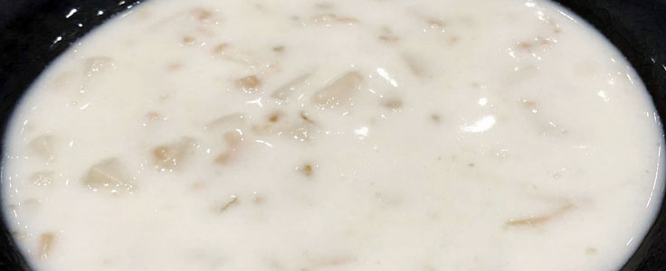
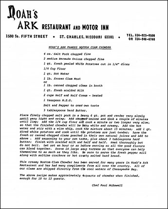

INDEX
INDEX
| Category: | |
| Noah's Ark Boston Clam Chowder | |
 |
|
| Ex Culina:Chef Paul McDowell, Noah's Ark Restaurant | |
4 oz salt pork, chopped fine
2 medium Bermuda onions, chopped fine
1 qt fresh peeled white potatoes, cut in 1/4 inch dices
1/4 cup flour
1 qt hot water
1 lb frozen clam meat or 1 lb canned chopped clams in broth
1 qt fresh scalded milk
2 cups half and half, heated
1 tsp MSG
Salt and pepper to taste
3 Tbsp hard butter
Yield:10-12 servings
Comments:Noah's Ark was a restaurant in St. Charles, Missouri. This creamy chowder was
created by Paul McDowell, a chef at Noah's Ark for 24 years. The restaurant served 400 to 500 gallons of it
every week.
